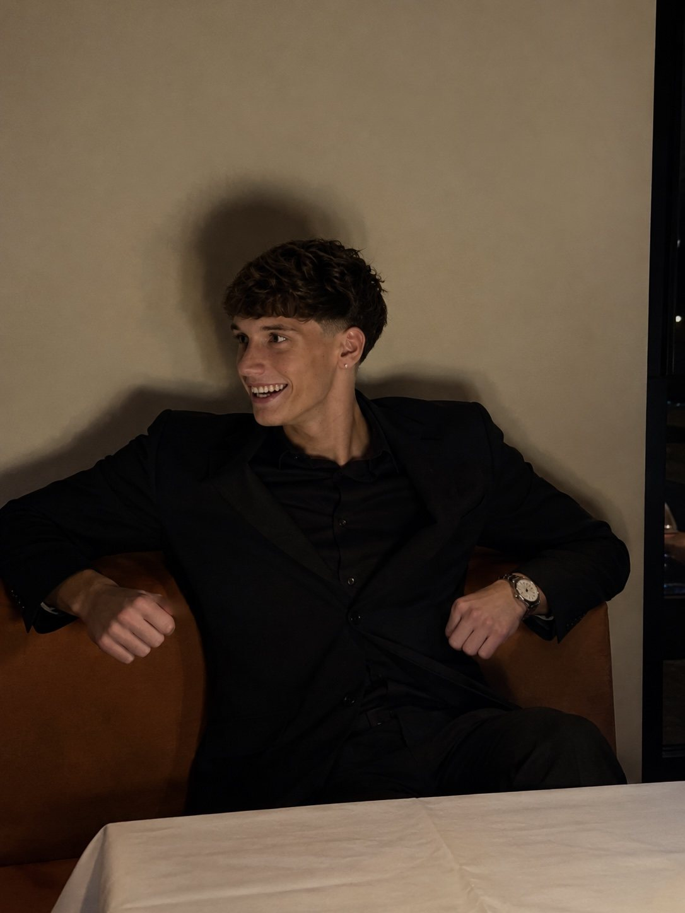

Chi sono
Piacere,
sono
Mattia

Creo
siti web su misura
per le attività di Roma che hanno clienti contenti, ma ancora nessun sito.
Prima vi preparo una
bozza gratuita
. Se vi piace, ne parliamo.
maqwebdesign.com